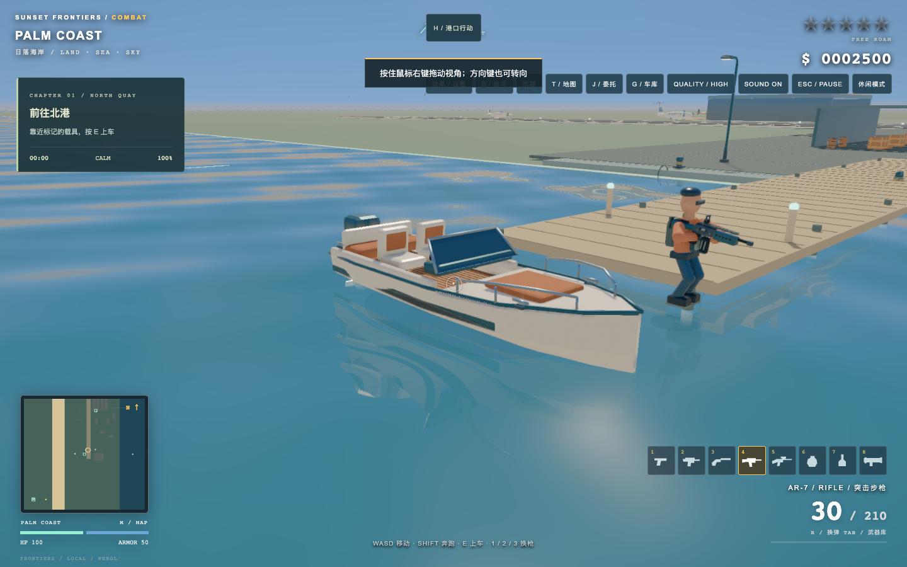
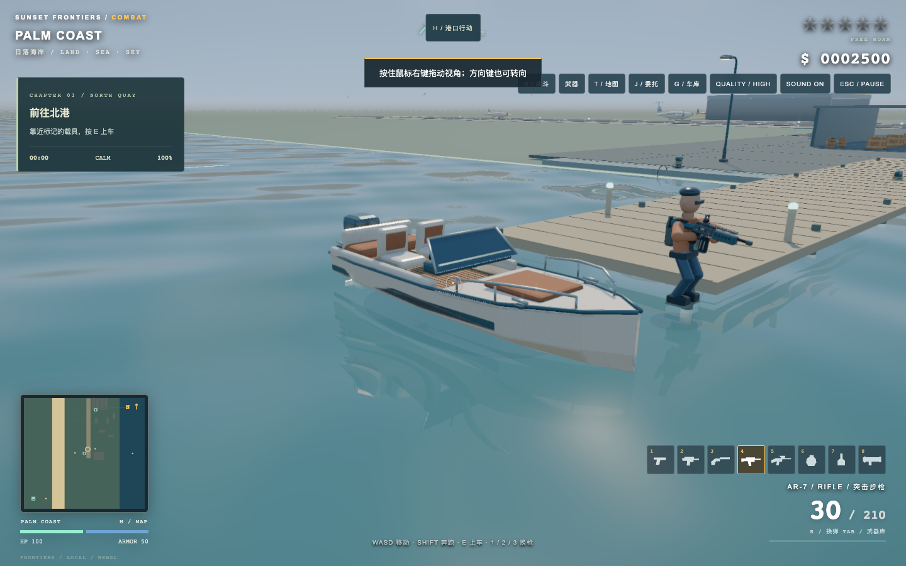

HARBOR STORIES / RADIANCE 6.3.1
让港口恢复明亮与色彩
拖动滑杆，对照同一机位、同一批模型的实际游戏截图。本轮降低天空泛白，改善物体补光与色彩，保留阴影和水面反射。两个版本均使用精细画质、曝光 1，截图时间已冻结。


6.3 · 调整前6.3.1 · 调整后
水面恢复蓝绿色，保留快艇与码头反射；远处雾气更克制。
这是游戏版本对照，并非 Blender Cycles 渲染。角色和部分建筑仍是风格化模型；实时光照与离线光线追踪存在差异。